Widget Palette: Dojo Sliders
Horizontal Slider
Steps
- Choose New HTML File from the New menu
- Open the Dojo Controls folder in the Widget palette.
- Drag a HorizontalSlider widget onto the canvas.
- Notice a Smart Input dialog is displayed. It should look something like the following:
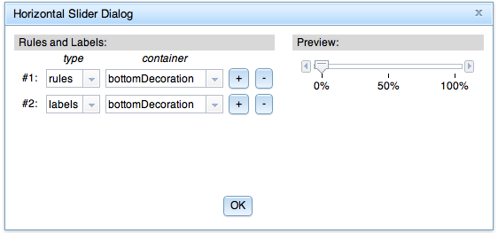
- Click OK.
- A HorizontalSlider should be displayed in the page editor:
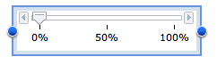
- The HorizontalSlider is a composite widget which can contain multiple HorizontalRule and HorizontalRuleLabel subwidgets. Mouse over the rule labels and you should notice
they get highlighted with a gray box indicating they can be selected independently of the slider as a whole:
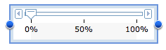
- Move the mouse over the rules and notice they get highlighted with a gray box indicating they can be selected independently of the slider as a whole:
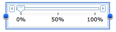
- Move the mouse over other parts of the slider and note the body of the slider is highlighted (clicking in this region selects the slider as a whole):
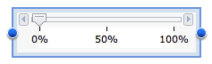
- Select the labels and under widget-specific properties, change Count to 5 and Container to "topDecoration". This should immediately
cause the labels to move above the slider bar and to contain 5 values.
- Select the rules and under widget-specific properties, change Count to 7 and Container to "topDecoration". This should immediately
cause the rules to move above the slider bar (and below the labels) and to contain 7 hashmarks.
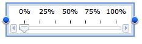
- Double-click on the slider to bring up the Smart Input Dialog. Ensure it reflects the new state of the slider:
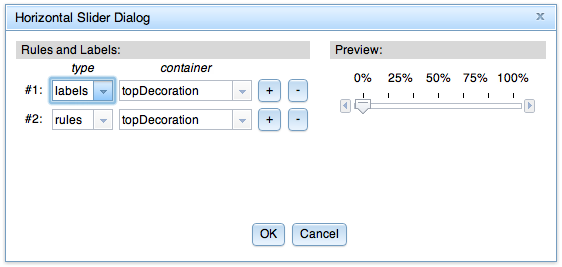
- Click the + button at the end of the 2nd row to add a new row. Change the type of that row to "rules". Note the preview slider is updated as you
make these changes.
- Click the + button at the end of the 3nd row to add a new row. Leave the type of that row set to "labels". At this point, your dialog should
look like the following:
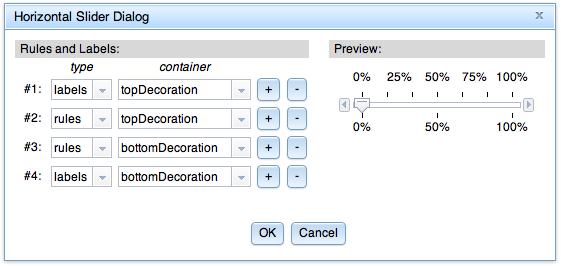
- Click OK and the slider should be rendered in the page editor as follows:
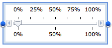
- Click on the Preview icon in the toolbar. This should open a new browser window showing your slider.
- Click on the "X" close button to close the html file (without saving).
Expected results
- See above.
Vertical Slider
Steps
- Choose New HTML File from the New menu
- Open the Dojo Controls folder in the Widget palette.
- Drag a VerticalSlider widget onto the canvas.
- Notice a Smart Input dialog is displayed. It should look something like the following:
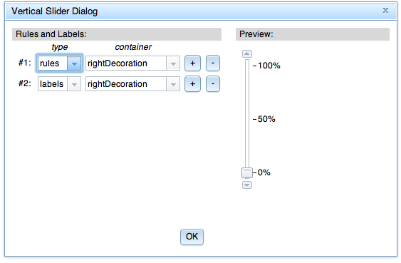
- Click OK.
- A VerticalSlider should be displayed in the page editor:
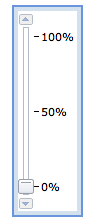
- The VerticalSlider is a composite widget which can contain multiple VerticalRule and VerticalRuleLabel subwidgets. Mouse over the rule labels and you should notice
they get highlighted with a gray box indicating they can be selected independently of the slider as a whole:
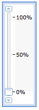
- Move the mouse over the rules and notice they get highlighted with a gray box indicating they can be selected independently of the slider as a whole:
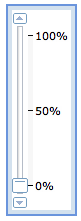
- Move the mouse over other parts of the slider and note the body of the slider is highlighted (clicking in this region selects the slider as a whole):
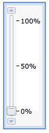
- Select the labels and under widget-specific properties, change Count to 5 and Container to "leftDecoration". This should immediately
cause the labels to move to the left of the slider bar and to contain 5 values.
- Select the rules and under widget-specific properties, change Count to 7 and Container to "leftDecoration". This should immediately
cause the rules to move to the left of the slider bar (and to the right of the labels) and to contain 7 hashmarks.
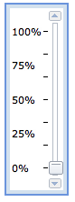
- Double-click on the slider to bring up the Smart Input Dialog. Ensure it reflects the new state of the slider:
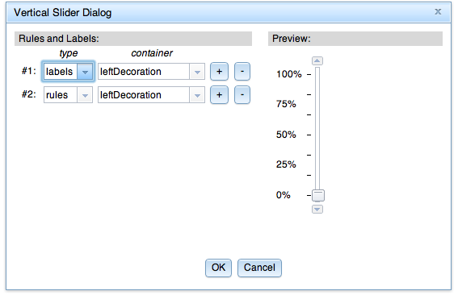
- Click the + button at the end of the 2nd row to add a new row. Change the type of that row to "rules". Note the preview slider is updated as you
make these changes.
- Click the + button at the end of the 3nd row to add a new row. Leave the type of that row set to "labels". At this point, your dialog should
look like the following:
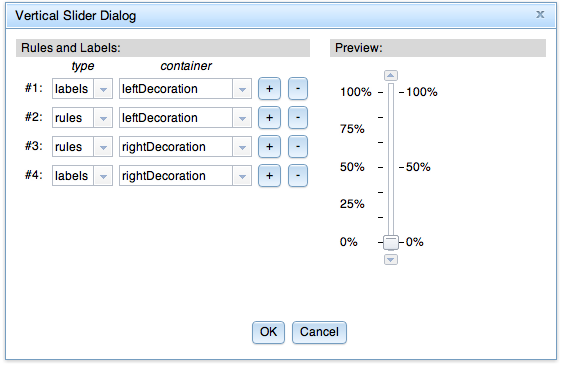
- Click OK and the slider should be rendered in the page editor as follows:
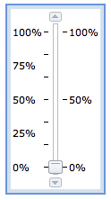
- Click on the Preview icon in the toolbar. This should open a new browser window showing your slider.
- Click on the "X" close button to close the html file (without saving).
Expected results
- See above.